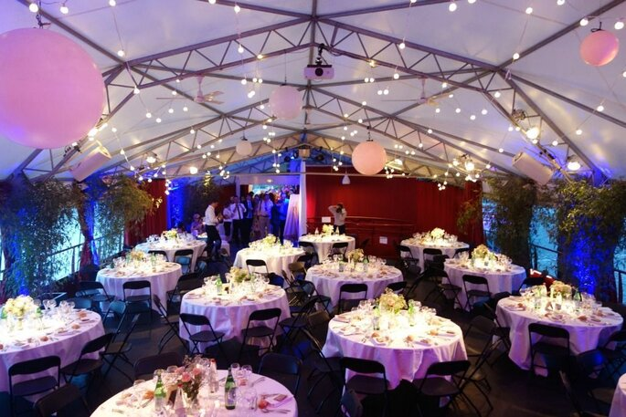

Programma delle due giornate:
Domenica 11 dicembre 2022:
- 13:00: Arrivo degli ospiti
- 16:00: servizio fotografico prima della cerimonia nuziale
- Dalle 17:00 alle 19:00: Matrimonio nella Chiesa di Saint-Pothin (Cerimonia, discorso)
- Dalle 19:00 a mezzanotte: vai al festival delle luci!
Lunedì 12 dicembre 2022:
- Da mezzanotte all'una: cena nuziale con degustazione di torte!
- Da 1h a 5h: Recati all'Opéra National de Lyon per un piccolo concerto, accompagnato da Gwen e dai suoi amici!
- 12:00 / 13:00: Pranzo
- 14:00-18:00: breve visita di Lione guidata da Al
Luogo del matrimonio
Il matrimonio si svolgerà a La Plateforme. È una barca di 600 mq, progettata per eventi e può ospitare fino a 700 persone. Saremo presenti dall'11 al 12 dicembre.

Hotel nelle vicinanze:
- Hotel Mercure Lyon Centre Beaux-Arts - 99€
- Hotel Mercure Lyon Centre Plaza Republique - 116€
- Hotel Bayard Bellecour - 86€
- Hotel Elysée - 61€
- Okko Hotel - 94€
- Hotel Silky Lyon by HappyCulture - 76€
Indirizzi:
- La Plateforme:4 Quai Victor Augagneur, 69003 Lyon
- Il festival delle luci: Place Bellecour, 69002 Lyon (16 minuti a piedi dalla la Plateforme)
- Chiesa di Saint-Pothin: 127 Rue de Créqui, 69006 Lyon (10 minuti a piedi dalla la Plateforme)
- Opéra National de Lyon1 Pl. de la Comédie, 69001 Lyon (9 minuti in treno, 13 minuti a piedi)
Ecco una mappa che mostra il luogo in cui si svolgerà il matrimonio: